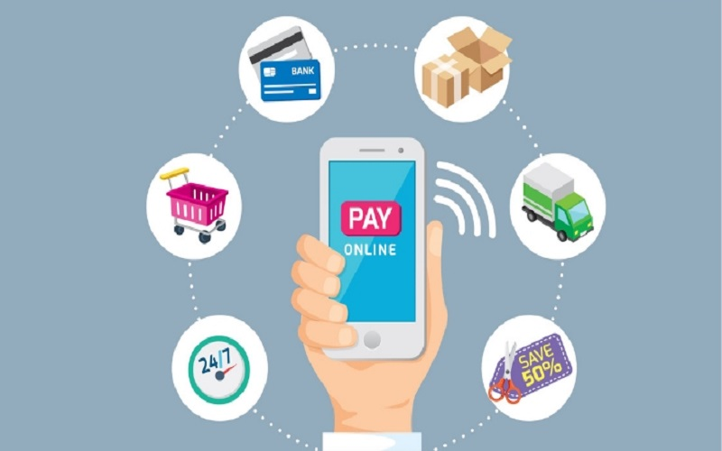
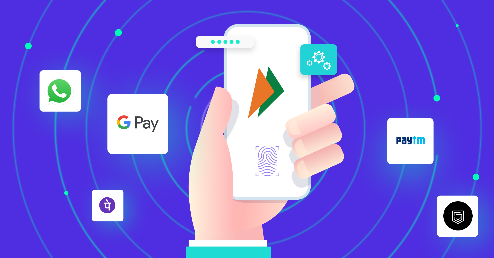

What Is a Digital Transaction?
A digital transaction is a process by which transactions take place without the use of cash. A digital transaction involves the collaboration of several parties including large financial firms and a number of sectors within the economy. A digital transaction is a seamless system involving one or more participants, where transactions occur without the need for cash.A digital transaction refers to any transaction that takes place from beginning to end without any need for cash or paper. It might involve a single party or multiple participants and can also involve multiple forms of payment. Fintech companies have transformed what financial transactions look like in today’s world, with cash becoming increasingly obsolete as a result.
Understanding Digital Transactions
As the needs of investors and financial service users become more complex, there is a demand for effective tools to simplify the processes and transactions carried out by end-users. It is inevitable that financial institutions would have to increase the number of digitized services and offerings, given a rise in the use of automated services Implementing technology in the financial industry is a necessity for the survival of businesses as customers seek lower-cost alternatives to traditional financial services. Fintech companies have led the revolution in transforming the financial sector by digitalizing the end-client’s transactional eco-system.
Digital Transaction Benefits

The example of a digital transaction above was made to show how the benefits of technology adaptation outweigh the costs for businesses, financial institutions, and end-users. Still, there are digital initiatives that come up to disrupt the previous digital transaction setups. Just as credit cards are disrupting the use of cash, processes like online transactions and cryptocurrencies are disrupting the regimen where physical presence and credit cards, respectively, are required for transactions. The e-commerce portal has provided a means by which buyers and sellers can engage in digital transactions; cloud service platforms have provided a digital process for storing data; crowdfunding gateways have provided a means by which individuals and startups can have access to funds; peer-to-peer lending forums have provided a way for individuals to lend to and borrow from each other without the hassles of the traditional banking regulation; roboadvising tools have provided a way for individuals to plan their retirement phase; etc. These all constitute digital transactions that may eventually get disrupted by new inventions over the years.
DIGITAL PAYMENTS AND THEIR IMPACT ON THE INDIAN ECONOMY
India has a huge potential for digital payments. As of October 2021, the country had around 1.18 billion mobile connections, 700 million Internet users, and about 600 million smartphones. These numbers are growing rapidly each quarter. With about 25.5 billion real-time payment transactions, India ranked first in the world in terms of the number of transactions in 2020.  In 1996, Industrial Credit and Investment Corporation of India (ICICI) introduced online banking services in India, by using electronic banking at its branches. Later in 1999, banks such as HDFC, IndusInd, and Citi launched online banking facilities. The trend continued to grow with increasingly more banks launching net banking services in India. This marked the beginning of the digital transactions era in India – several new banks started offering services to users. In 2008, the National Payments Corporation of India (NPCI) started its journey. It was formed by the Reserve Bank of India (RBI) and Indian Banks’ Association (IBA) in order to create a robust payment and settlement infrastructure in India. Since then, it has launched several products such as Aadhaar Enabled Payments System, Bharat Bill Payments System (BBPS), BHIM, and Cheque Transaction System. Newer models are emerging rapidly; currently, there are around 10 different types of digital payment methods in India. These include: Banking Card – This was launched by the Central Bank of India in India in 1980, in the form of the first credit card. MasterCard was introduced in 1988, and until 1993, several PSU banks started issuing credit cards. Unstructured Supplementary Service Data (USSD) – The USSD functionality was launched in 2016. This is a mobile banking facility enabling users to use mobile banking without smartphones or an Internet connection. Aadhaar Enabled Payment Systems (AEPS) – This is a bank-led model which allows online interoperable financial inclusion transactions at point-of-sale (PoS) through the business correspondent of any bank using the Aadhaar authentication. Unified Payments Interface (UPI) – UPI was developed by NPCI in 2016; it facilitates peer-to-peer, person-to-merchant transactions. Mobile Wallet – This is a virtual wallet that stores payment card information on a mobile device. Bank Pre-Paid Card – Under the motto “Pay Now, Use Later,” the pre-paid cards allow users to buy things with funds available in their cards. Point of Sale – Point of Sale (PoS) is a technological instrument provided by a Merchant Establishment (ME) to carry out the sale of goods or services to customers in a cashless environment. Internet Banking – This is an online banking method that enables customers of a bank or financial institution to carry out transactions through a portal. Mobile Banking – This is a service provided by banks and financial institutions to carry out financial transactions through a mobile device. Micro ATM – These are portable devices allowing banking transactions through card swipe machines.
PhonePe:
PhonePe is an Indian digital payments and financial services company headquartered in Bengaluru, Karnataka, India.PhonePe was founded in December 2015,by Sameer Nigam, Rahul Chari and Burzin Engineer.The PhonePe app, based on the Unified Payments Interface (UPI), went live in August 2016. The PhonePe app is accessible in 11 Indian languages.It enables users to perform various financial transactions such as sending and receiving money, recharging mobile and DTH, making utility payments, conducting in-store payments. PhonePe was incorporated in December 2015. In April 2016, the company was acquired by Flipkart and as part of the acquisition, the FxMart license was transferred to PhonePe and rebranded as the PhonePe wallet. PhonePe's founder Sameer Nigam was appointed as the CEO of the company. In August 2016, the company partnered with Yes Bank to launch a UPI-based mobile payment app, based on the government-backed UPI platform. In January 2018, the app garnered ten million downloads.In August 2017, the PhonePe app surpassed BHIM in UPI transactions. In 2022, PhonePe became the first UPI TPAP (Third Party Application Providers) App to allow UPI activation through Aadhaar. A year later, it further expanded its services by launching international UPI payments, allowing Indian users traveling abroad to pay foreign merchants with Unified Payments Interface (UPI).As per NPCI's UPI ecosystem statistics, PhonePe currently holds a 50% market share by value of transactions in the UPI market. In 2022, PhonePe obtained licensing from the Reserve Bank of India for operating a Semi-Closed Prepaid Payment system. In August 2023, PhonePe introduced a stock broking app and web platform named Share Market, via its subsidiary PhonePe Wealth Broking. The platform allows users to trade in stocks and mutual funds, including intraday trading and pre-curated investment baskets. In February 2024, PhonePe introduced Indus Appstore, a mobile app store. The app store offers over 2 lakh apps and games across 45 categories.
Google Pay:
Google Pay (formerly Android Pay) is a mobile payment service developed by Google to power in-app, online, and in-person contactless purchases on mobile devices, enabling users to make payments with Android phones, tablets, or watches. Users can authenticate via a PIN, passcode, or biometrics such as 3D face scanning or fingerprint recognition. Google Pay uses near-field communication (NFC) to transmit card information facilitating funds transfer to the retailer. It replaces the credit or debit card chip and PIN or magnetic stripe transaction at point-of-sale terminals by allowing the user to upload these in Google Wallet. It is similar to contactless payments already used in many countries, with the addition of two-factor authentication. The service lets Android devices wirelessly communicate with point of sale systems using a near field communication (NFC) antenna and host-based card emulation (HCE). When the user makes a payment to a merchant, Google Pay does not send the actual payment card number. Instead, it generates a virtual account number representing the user's account information. Google Pay requires that a screen lock be set on the phone or watch.It has no payment card limit. Users can add payment cards to the service by taking a photo of the card, or by entering the card information manually. To pay at points of sale, users hold their authenticated device to the point of sale system. The service has smart-authentication, allowing the system to detect when the device is considered secure (for instance, if unlocked in the last five minutes) and challenge if necessary for unlock information.
and there are many other UPI payment platforms like PhonePe BHIM App,PayTM,Axis Pay,CRED,Freecharge,iMobile App..... etc